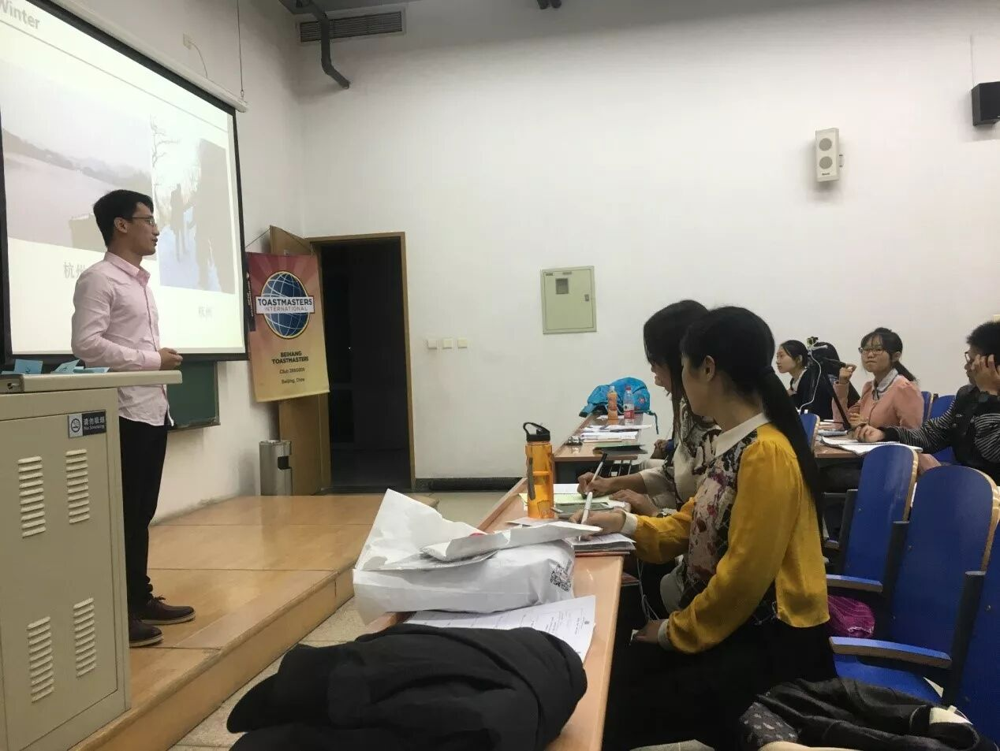
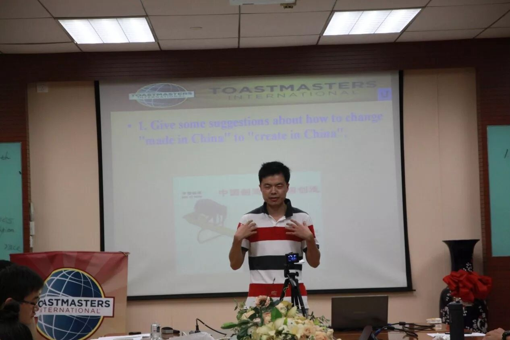
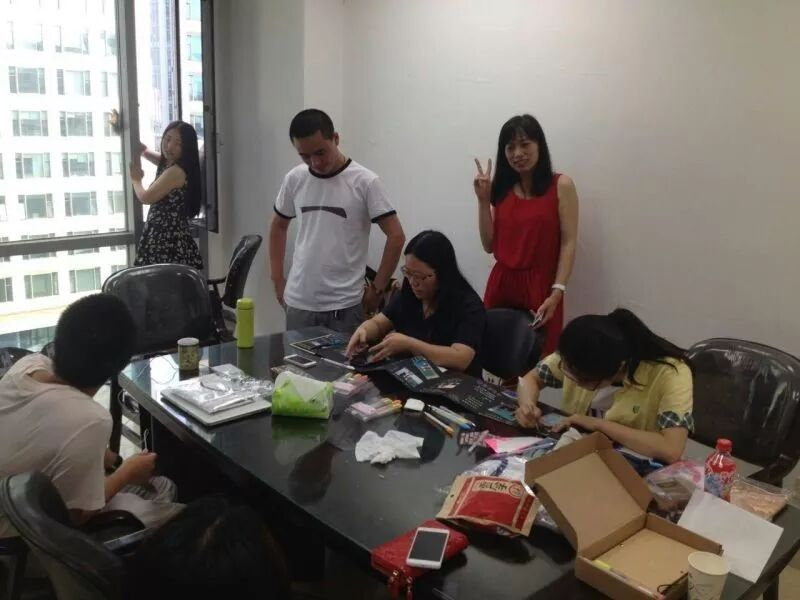
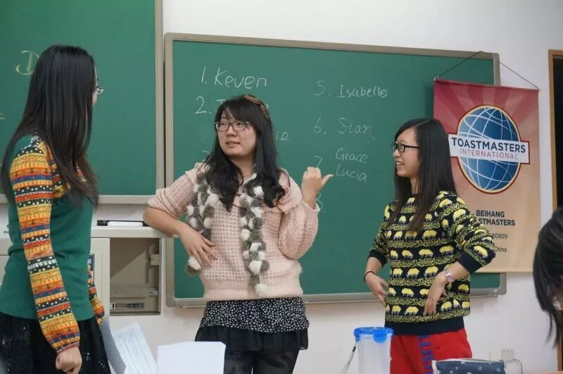
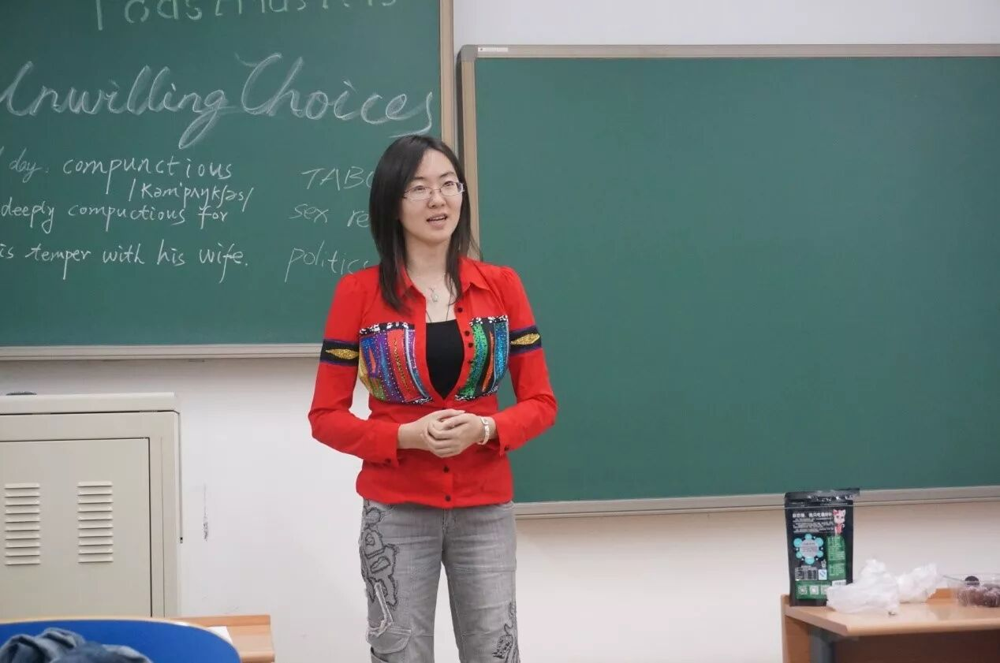
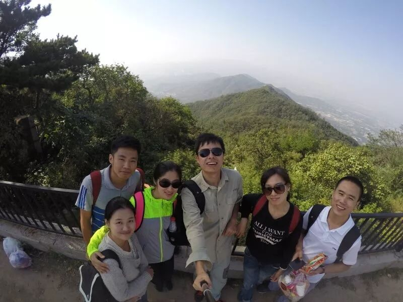
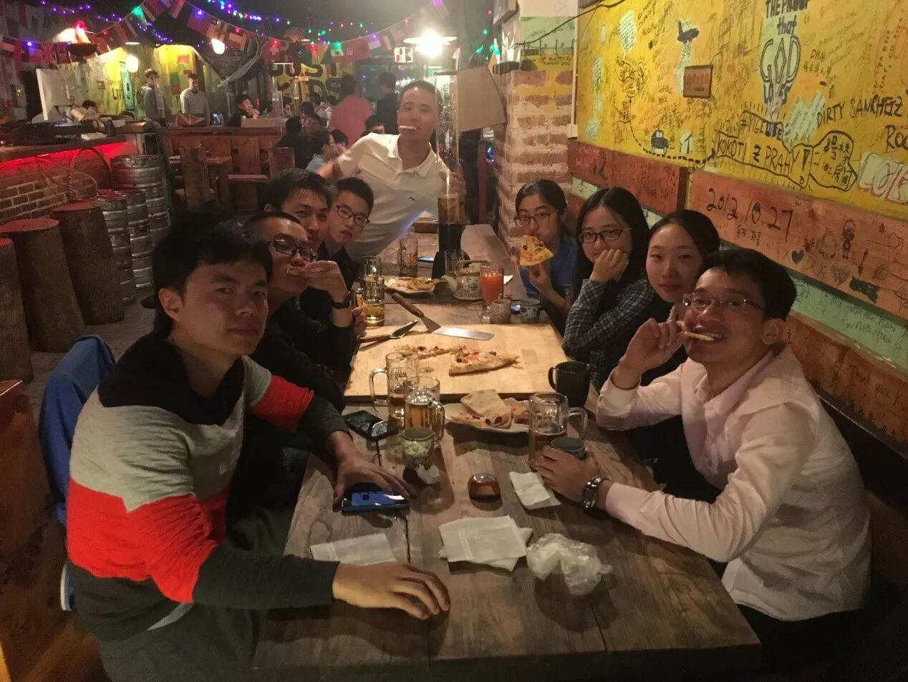

社团简介：
北航Toastmasters国际英语演讲俱乐部是一个面向校内外提供专业化，高标准英语的交流平台，旨在提升公共演讲能力、培养团队精神与领袖气质，结识校内外、国内外朋友。北航Toastmasters已经有近3年的成长经验，享受微软、IBM等多个企业Toastmasters俱乐部的支持，并承袭Toastmasters International总部80年的优良传统，努力做好服务学生服务社会的非营利组织。

活动形式：
以即兴演讲、备稿演讲为主，每周更换活动主题，多个角色构成的专业化综合评价体系会给予演讲者详细点评，反馈便条和有奖问答的特色设计增强了会议的气氛，会议前、会议间歇和会后均提供自由交流机会。
活动时间：每周五19:30-21:30
活动地点：北航新主楼 A218（以公众号推送为主~）
我们能提供什么？？
中英文演讲平台

口语帝的诞生地

活动策划与主持机会

结识帅哥美女和外籍朋友的机会

领袖是练出来的

丰富的出游活动～

去野游、聚餐、真人密室逃脱吧！

所以，还在等什么？？？赶紧来加入我们吧~~！！！长按下图的二维码，关注我们的公众号，每周会推送活动的时间地点和主题——
联系人:
Frank(王一帆)：
WeChat：wyf709794962
Star(陈星)：
WeChat：chenxingstar00


What is Toastmasters
Toastmasters International (TI) is a nonprofit educational organization that operates clubs worldwide for the purpose of helping members improve their communication, public speaking, and leadership skills.
You can find us by the following map of Beihang University.

https://mp.weixin.qq.com/s/dcW1dSuC9F3OPjP7C1NlRQ
本页为抢救式本地归档，图文已永久保存。